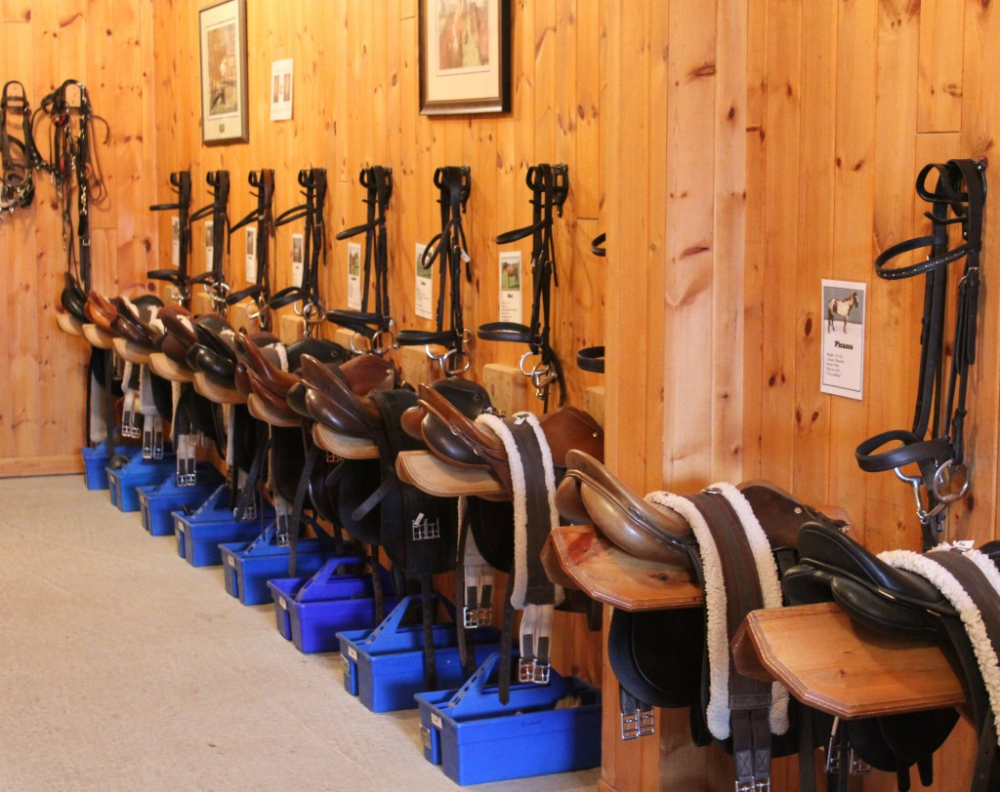
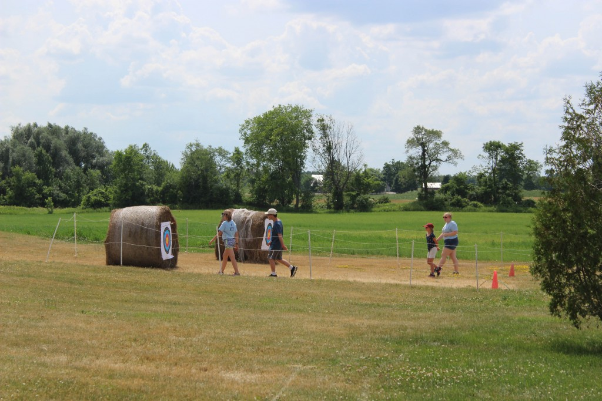
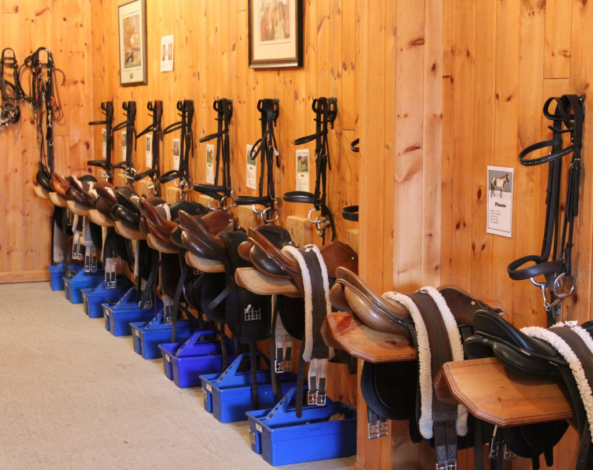
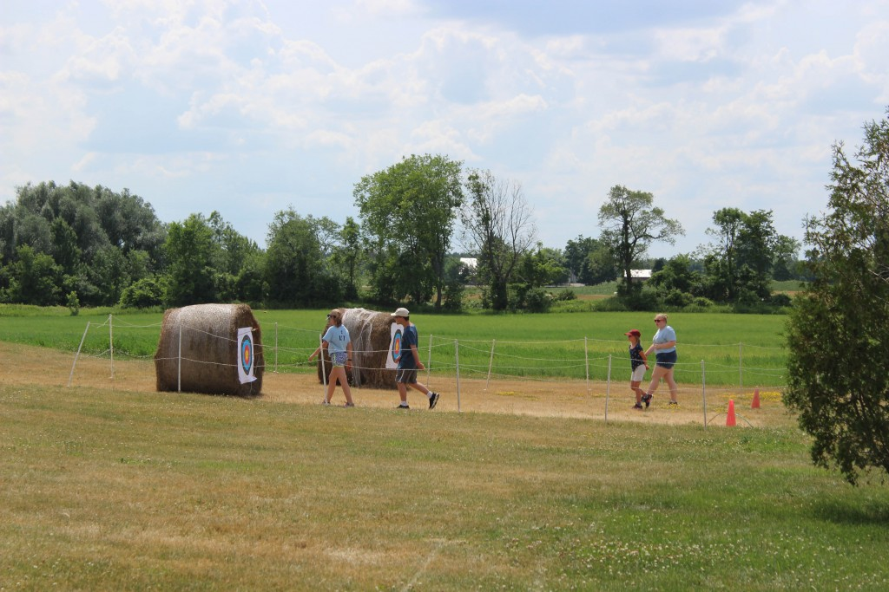
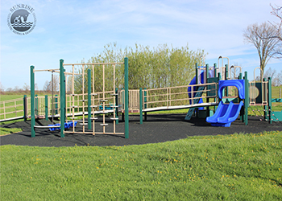
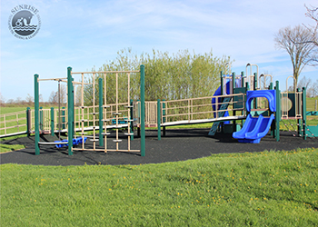

Facilities
Sunrise is located on a 102-acre farm just south of the 401 in Puslinch Township. The farm is just a 15-minute drive from both Cambridge and Guelph, Ontario. We are pleased to offer a variety of accessible and innovative facility resources, made possible by capital grants from local service clubs, corporations, individuals and foundation, including the Ontario Trillium Foundation.
Sunrise facilities include:
- Marguerite Clayton indoor riding arena, with separate mounting area (by UPI Energy LP) and accessible upstairs viewing lounge ("Kristen's View")
- Outdoor riding ring
- Kate Welch Tack Room
- McDonald's Children's Charities- Quiet Room
- Children's camp and activity spaces, including "Marguerite's Discovery Centre"
- Warren Milas Accessible Playground
- Salt-water pool (by Bridgeway Foundation, The Ronald McDonald House Charities Canada and D.H. Falle Family Foundation)
- Rotary Club of Guelph Children's Nature Project, including teaching ponds, nature pavilion, accessible boardwalks, Mawgan's butterfly gardens, raised vegetable garden beds
- Therapy & Memorial Forest
- Low ropes course
- Ann Caine Farmhouse
- Raised garden beds
- Archery range (seasonal)
- Riding/hiking trails


 



 
